SYDE 671 · Assignment 3
A3
PART ONE
1.1 · Source photographs
Two overlapping campus photos are used for the manual mosaic. The three parking-lot photos are used for the automatic mosaic.


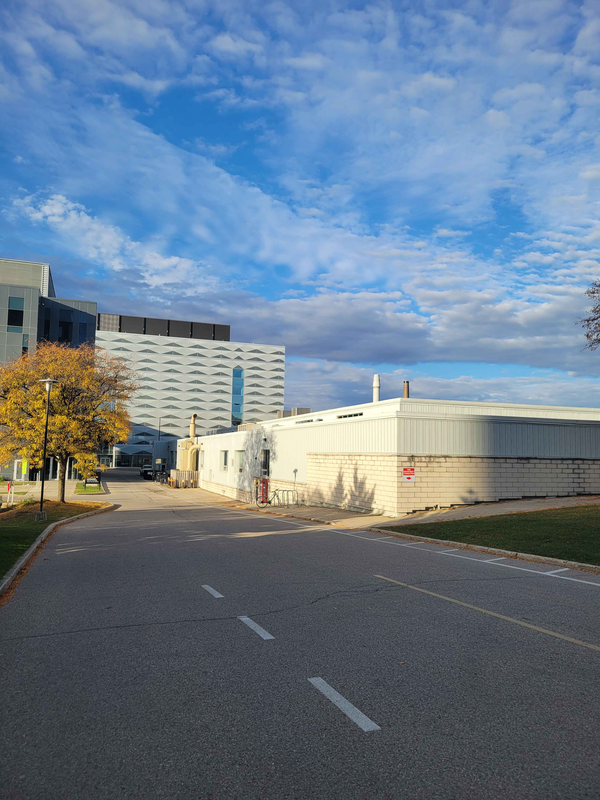


1.2 · Recovering the homography
H maps a point (x, y) in the left photo to (u, v) in the right photo. Setting its last entry to 1 leaves eight unknowns:
Multiplying by the denominator and collecting the unknowns gives two linear equations per point pair:
For eight unknowns, four pairs of (x, y) points are enough to solve for H. Eight pairs are used for better accuracy, giving 16 equations to solve with least squares.
Code snippet
def computeH(im1_pts, im2_pts):
A = []
b = []
# Build equations
for (x, y), (u, v) in zip(im1_pts, im2_pts):
A.append([x, y, 1, 0, 0, 0, -u*x, -u*y])
A.append([0, 0, 0, x, y, 1, -v*x, -v*y])
b.extend([u, v])
A = np.array(A, dtype=float)
b = np.array(b, dtype=float)
h = np.linalg.lstsq(A, b, rcond=None)[0]
H = np.append(h, 1).reshape(3, 3)
return H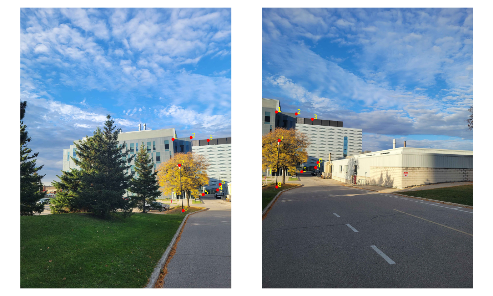
Selected point coordinates
| Pair | Left (x, y) | Right (u, v) |
|---|---|---|
| 1 | (433.6, 374.4) | (40.7, 296.7) |
| 2 | (484.8, 369.4) | (97.1, 302.2) |
| 3 | (533.4, 376.6) | (143.2, 317) |
| 4 | (560.9, 518.2) | (152.7, 454.4) |
| 5 | (520, 531.1) | (113.2, 467.2) |
| 6 | (567.5, 502.2) | (158.5, 440.7) |
| 7 | (452.2, 448.6) | (48.1, 377.6) |
| 8 | (462.5, 577.2) | (42, 510.2) |
The resulting H is:
[[ 1.491956 -0.207044 -515.839816] [ 0.519659 1.252276 -301.764171] [ 0.000944 -0.000247 1. ]]
1.3 · Image warping and rectification
The four image corners are mapped through H to find the output bounds. For each output pixel, H inverse gives the source position. Nearest neighbour rounds that position to a pixel:
Code snippet
def warpImageNearestNeighbor(im, H):
height, width = im.shape[:2]
x_min, y_min, x_max, y_max = find_bounds(im, H)
output_height = y_max - y_min + 1
output_width = x_max - x_min + 1
warped = np.zeros((output_height, output_width) + im.shape[2:])
H_inv = np.linalg.inv(H)
# Inverse warp
for y in range(warped.shape[0]):
for x in range(warped.shape[1]):
source = H_inv @ np.array([x + x_min, y + y_min, 1])
sx, sy = source[:2] / source[2]
sx, sy = int(np.floor(sx + 0.5)), int(np.floor(sy + 0.5))
if 0 <= sx < width and 0 <= sy < height:
warped[y, x] = im[sy, sx]
return warpedBilinear interpolation averages the four surrounding pixels: first across the top and bottom rows, then between those two colors:
Code snippet
# Four neighbors
x0, y0 = int(np.floor(sx)), int(np.floor(sy))
x1, y1 = min(x0 + 1, width - 1), min(y0 + 1, height - 1)
dx, dy = sx - x0, sy - y0
# Weighted average
top = (1 - dx) * im[y0, x0] + dx * im[y0, x1]
bottom = (1 - dx) * im[y1, x0] + dx * im[y1, x1]
warped[y, x] = (1 - dy) * top + dy * bottomFull bilinear function
Code snippet
def warpImageBilinear(im, H):
x_min, y_min, x_max, y_max = find_bounds(im, H)
output_height = y_max - y_min + 1
output_width = x_max - x_min + 1
warped = np.zeros((output_height, output_width) + im.shape[2:])
H_inv = np.linalg.inv(H)
height, width = im.shape[:2]
for y in range(warped.shape[0]):
for x in range(warped.shape[1]):
source = H_inv @ np.array([x + x_min, y + y_min, 1])
sx, sy = source[:2] / source[2]
if 0 <= sx <= width - 1 and 0 <= sy <= height - 1:
# Four neighbors
x0, y0 = int(np.floor(sx)), int(np.floor(sy))
x1, y1 = min(x0 + 1, width - 1), min(y0 + 1, height - 1)
dx, dy = sx - x0, sy - y0
# Weighted average
top = (1 - dx) * im[y0, x0] + dx * im[y0, x1]
bottom = (1 - dx) * im[y1, x0] + dx * im[y1, x1]
warped[y, x] = (1 - dy) * top + dy * bottom
return warpedThe H from 1.2 is used for both warpers:
Code snippet
imwarped_nn = warpImageNearestNeighbor(im, H)
imwarped_bil = warpImageBilinear(im, H)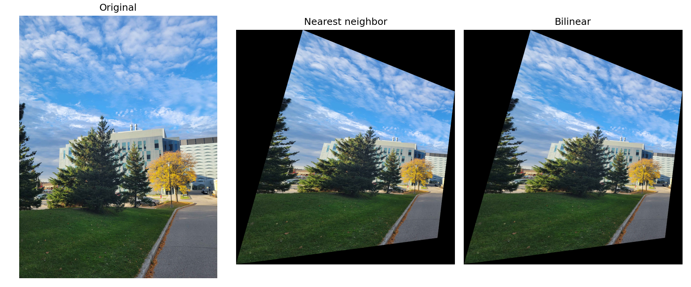
For rectification, the four window corners are matched to four corners of a rectangle using computeH. Warping with this H straightens the window.
Code snippet
# Top-left, top-right, bottom-left, bottom-right
corners = np.array([[16.7, 7.8], [74.5, 10.5],
[14.3, 94.8], [72.4, 97.6]])
rectangle = np.array([[0, 0], [139, 0],
[0, 209], [139, 209]])
H = computeH(corners, rectangle)
imwarped_nn = warpImageNearestNeighbor(im, H)
imwarped_bil = warpImageBilinear(im, H)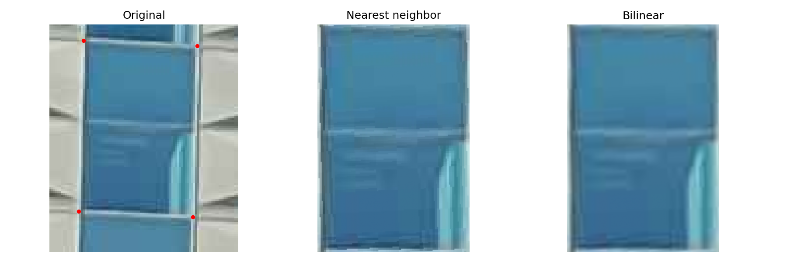
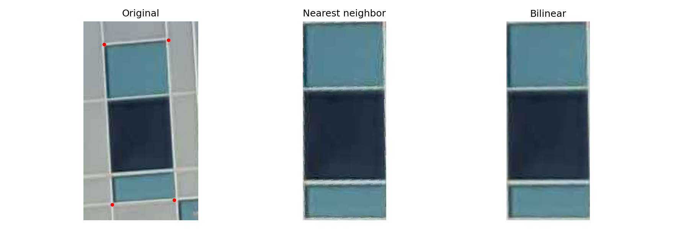
| Image | Nearest neighbour | Bilinear |
|---|---|---|
| campus warp | 6.910 s | 13.948 s |
| campus right window | 0.362 s | 0.811 s |
| campus left window | 0.723 s | 1.705 s |
Nearest neighbour looks coarser because it rounds the position, causing jagged edges. Bilinear smooths the neighboring colors, but takes longer because it uses four pixels for each output color.
1.4 · Blending the images
The left photo is warped with warpImageBilinear and placed on the same canvas as the right photo. A warped ones image counts where its pixels are present. Dividing the added pixel values by the count averages the overlap.
Code snippet
def createMosaic(im1, im2, H):
warped1 = warpImageBilinear(im1, H)
# Coverage: 1 inside the image, 0 outside
mask1 = warpImageBilinear(np.ones_like(im1), H)
height1, width1 = warped1.shape[:2]
height2, width2 = im2.shape[:2]
# Shared canvas
x_min1, y_min1, x_max1, y_max1 = find_bounds(im1, H)
x_min, y_min = min(x_min1, 0), min(y_min1, 0)
x_max, y_max = max(x_max1, width2 - 1), max(y_max1, height2 - 1)
mosaic = np.zeros((y_max - y_min + 1, x_max - x_min + 1, 3))
count = np.zeros_like(mosaic)
# Add both images to the canvas
y1, x1 = y_min1 - y_min, x_min1 - x_min
mosaic[y1:y1 + height1, x1:x1 + width1] += warped1
count[y1:y1 + height1, x1:x1 + width1] += mask1
y2, x2 = -y_min, -x_min
mosaic[y2:y2 + height2, x2:x2 + width2] += im2
count[y2:y2 + height2, x2:x2 + width2] += 1
# Average where both images overlap
return mosaic / np.maximum(count, 1)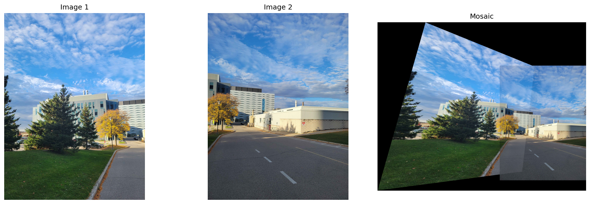
PART TWO
2.1 · Harris corners and ANMS
The supplied Harris function is used to find the corners. For each corner, ANMS finds stronger corners using scores[i] < 0.9 * scores[j]. The Euclidean distance to each of these corners is calculated, and the smallest distance is taken as the radius. The 500 corners with the largest radii are kept.
Code snippet
def ANMS(h, coords, num_points=500):
ys, xs = coords
points = np.column_stack((xs, ys))
scores = h[ys, xs]
radii = np.full(len(points), np.inf)
# Nearest stronger corner
for i in range(len(points)):
x, y = points[i]
stronger = points[scores[i] < 0.9 * scores]
if len(stronger) > 0:
distances = np.sqrt((stronger[:, 0] - x)**2 + (stronger[:, 1] - y)**2)
radii[i] = distances.min()
order = np.argsort(radii)[::-1]
return points[order[:num_points]]| Image | Harris corners | After ANMS |
|---|---|---|
| Left | 7,043 | 500 |
| Middle | 7,073 | 500 |
| Right | 6,781 | 500 |
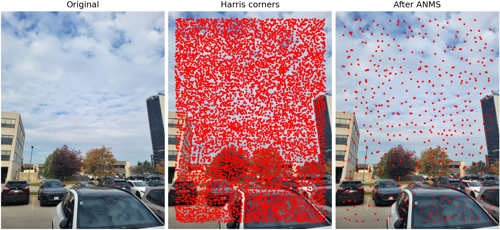
2.2 · Feature descriptors
Each corner uses a 40 × 40 patch, blurred with the Gaussian filter from A2. Taking every fifth row and column gives an 8 × 8 descriptor.
We subtract the mean and divide by the standard deviation:
Code snippet
def extractDescriptors(gray, points):
descriptors = []
for x, y in points:
# Blur the 40 x 40 patch
patch = gray[y - 20:y + 20, x - 20:x + 20]
patch = gaussian_filter(patch, kernel_size=13, sigma=2, boundary='symm')
# Sample every fifth pixel
patch = patch[::5, ::5]
# Normalize
patch = patch - patch.mean()
std = patch.std()
if std > 0:
patch = patch / std
descriptors.append(patch)
return np.array(descriptors)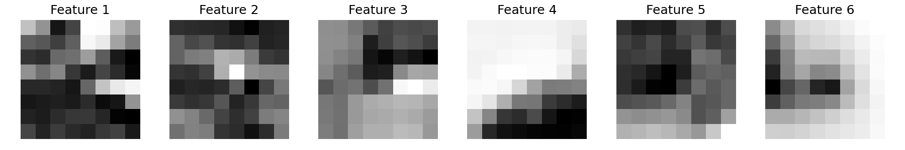
2.3 · Feature matching
Code snippet
def matchDescriptors(descriptors1, descriptors2, threshold=0.5):
matches = []
if len(descriptors2) < 2:
return np.empty((0, 2), dtype=int)
for i, descriptor1 in enumerate(descriptors1):
errors = []
for descriptor2 in descriptors2:
error = np.sum((descriptor1 - descriptor2)**2)
errors.append(error)
order = np.argsort(errors)
best_index = order[0]
second_index = order[1]
best_error = errors[best_index]
second_error = errors[second_index]
if second_error == 0:
continue
# Ratio test
ratio = best_error / second_error
if ratio < threshold:
matches.append([i, best_index])
return np.array(matches, dtype=int).reshape(-1, 2)Descriptors are compared using the sum of squared differences (SSD). A smaller SSD means a closer match. The best match is kept only if its error is less than half the second-best error. If the two errors are similar, the match is rejected.
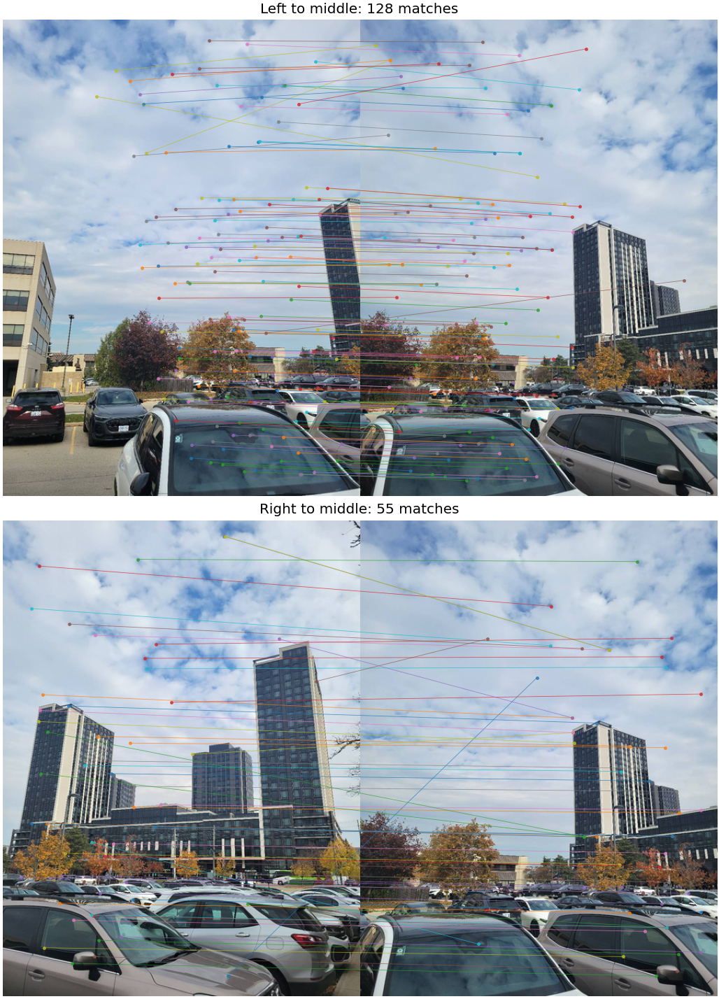
2.4 · RANSAC and automatic mosaicing
Code snippet
def ransacHomography(points1, points2, iterations=1000, threshold=3):
best_inliers = []
for _ in range(iterations):
sample = np.random.choice(len(points1), 4, replace=False)
H = computeH(points1[sample], points2[sample])
if H is None:
continue
# Test all matches
inliers = []
for i, (point1, point2) in enumerate(zip(points1, points2)):
prediction = H @ np.append(point1, 1)
prediction = prediction[:2] / prediction[2]
error = np.sqrt(np.sum((prediction - point2)**2))
if error < threshold:
inliers.append(i)
if len(inliers) > len(best_inliers):
best_inliers = inliers
# Refit using all inliers
H = computeH(points1[best_inliers], points2[best_inliers])
return H, np.array(best_inliers)Each trial randomly chooses four matched point pairs and uses computeH to calculate H. That H maps every source point to the second image. The Euclidean distance from the mapped point to its matching point is the error; matches below 3 pixels are counted as inliers. This is repeated 1000 times, and the group with the most inliers is kept. H is then calculated again using all the inlier pairs, instead of only the four sampled pairs.
| Pair | Matches from 2.3 | RANSAC inliers |
|---|---|---|
| left to middle | 128 | 77 |
| right to middle | 55 | 30 |
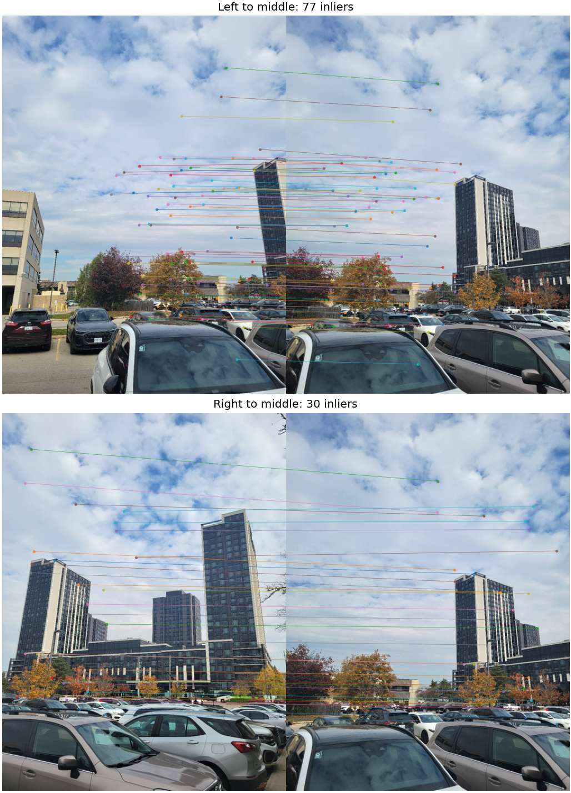
Recovered homographies
Left to middle:
[[ 1.356411 -0.152784 -165.4918 ] [ 0.382292 1.18322 -100.127848] [ 0.000789 -0.000102 1. ]]
Right to middle:
[[ 0.51559 0.10958 211.007022] [ -0.419744 0.79338 81.873741] [ -0.00086 -0.000132 1. ]]
The middle photo stays fixed. The left and right photos are warped using their H matrices, then blended as in 1.4.
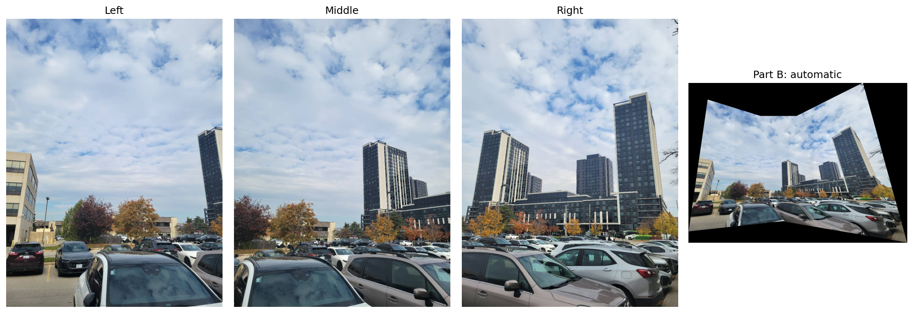
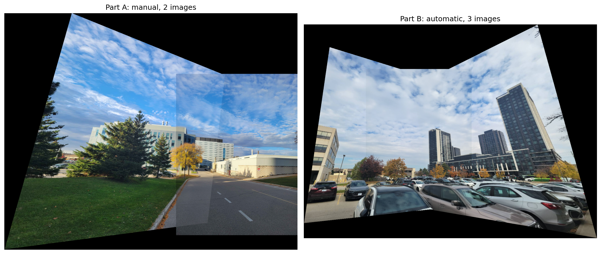
Most important thing learned
The most important thing I learned was how much the final stitch depends on the point matches used to estimate the homography. For the right and middle photos, RANSAC kept 30 of the 55 initial matches. That showed me why similar-looking patches still need to agree on how the two images line up.